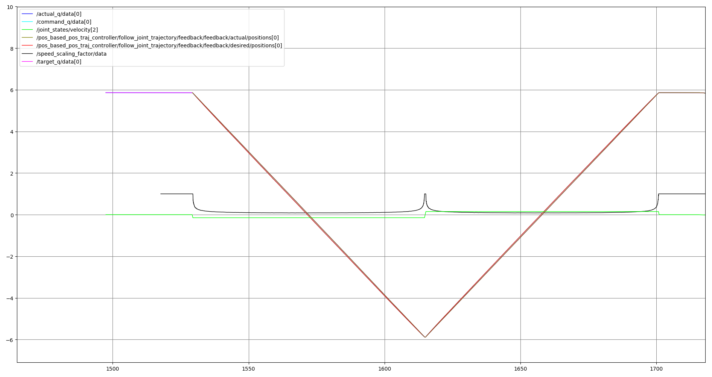

ur_controllers
This package contains controllers and hardware interface for ros_control that are special to the UR
robot family. Currently this contains:
A speed_scaling_interface to read the value of the current speed scaling into controllers.
A scaled_joint_command_interface that provides access to joint values and commands in combination with the speed scaling value.
A speed_scaling_state_controller that publishes the current execution speed as reported by the robot to a topic interface. Values are floating points between 0 and 1.
A scaled_joint_trajectory_controller that is similar to the joint_trajectory_controller, but it uses the speed scaling reported by the robot to reduce progress in the trajectory.
About this package
This package contains controllers not being available in the default ros_control set. They are
created to support more features offered by the UR robot family. Any of these controllers are
example implementations for certain features and are intended to be generalized and merged
into the default ros_control controller set at some future point.
Controller description
This packages offers a couple of specific controllers that will be explained in the following sections.
ur_controllers/SpeedScalingStateBroadcaster
This controller publishes the current actual execution speed as reported by the robot. Values are floating points between 0 and 1.
In the ur_robot_driver
this is calculated by multiplying the two RTDE data
fields speed_scaling (which should be equal to the value shown by the speed slider position on the
teach pendant) and target_speed_fraction (Which is the fraction to which execution gets slowed
down by the controller).
position_controllers/ScaledJointTrajectoryController and velocity_controllers/ScaledJointTrajectoryController
These controllers work similar to the well-known joint_trajectory_controller.
However, they are extended to handle the robot’s execution speed specifically. Because the default
joint_trajectory_controller would interpolate the trajectory with the configured time constraints (ie: always assume maximum velocity and acceleration supported by the robot),
this could lead to significant path deviation due to multiple reasons:
The speed slider on the robot might not be at 100%, so motion commands sent from ROS would effectively get scaled down resulting in a slower execution.
The robot could scale down motions based on configured safety limits resulting in a slower motion than expected and therefore not reaching the desired target in a control cycle.
Motions might not be executed at all, e.g. because the robot is E-stopped or in a protective stop
Motion commands sent to the robot might not be interpreted, e.g. because there is no external_control program node running on the robot controller.
The program interpreting motion commands could be paused.
The following plot illustrates the problem:

The graph shows a trajectory with one joint being moved to a target point and back to its starting point. As the joint’s speed is limited to a very low setting on the teach pendant, speed scaling (black line) activates and limits the joint speed (green line). As a result, the target trajectory (light blue) doesn’t get executed by the robot, but instead the pink trajectory is executed. The vertical distance between the light blue line and the pink line is the path error in each control cycle. We can see that the path deviation gets above 300 degrees at some point and the target point at -6 radians never gets reached.
All of the cases mentioned above are addressed by the scaled trajectory versions. Trajectory execution
can be transparently scaled down using the speed slider on the teach pendant without leading to
additional path deviations. Pausing the program or hitting the E-stop effectively leads to
speed_scaling being 0 meaning the trajectory will not be continued until the program is continued.
This way, trajectory executions can be explicitly paused and continued.
With the scaled version of the trajectory controller the example motion shown in the previous diagram becomes:
{kind=link}
The deviation between trajectory interpolation on the ROS side and actual robot execution stays minimal and the robot reaches the intermediate setpoint instead of returning “too early” as in the example above.
Under the hood this is implemented by proceeding the trajectory not by a full time step but only by the fraction determined by the current speed scaling. If speed scaling is currently at 50% then interpolation of the current control cycle will start half a time step after the beginning of the previous control cycle.